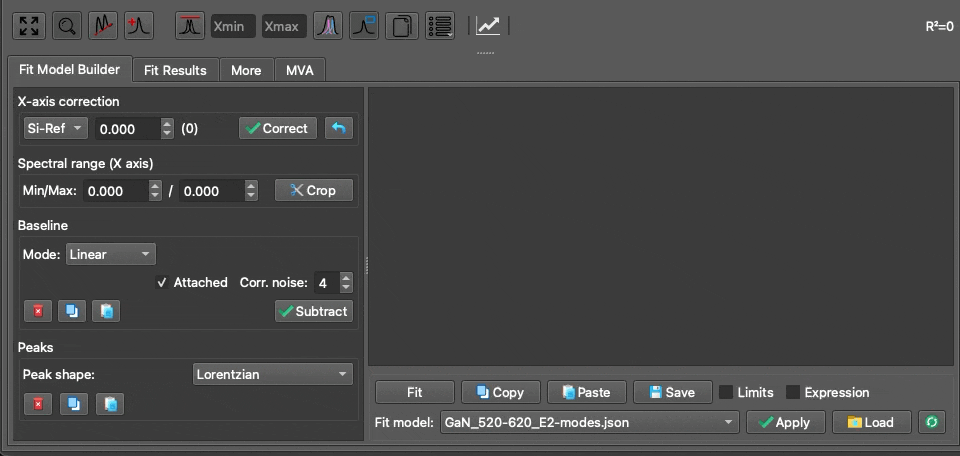
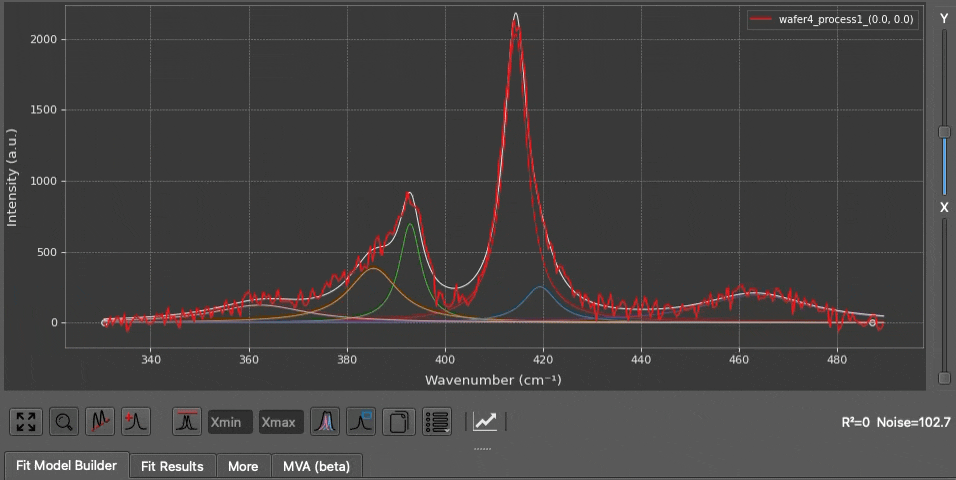
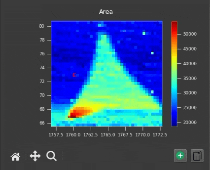
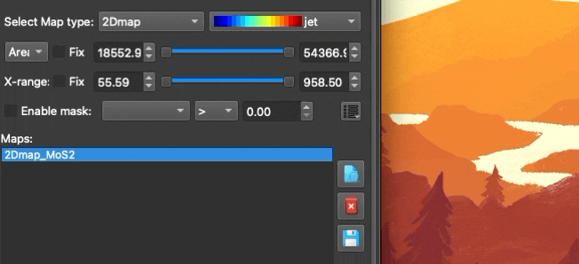

快捷键与技巧
键盘快捷键与技巧¶
1. 随处可见的工具提示¶
如果您不确定某个按钮或参数的具体作用，只需将鼠标指针在该图形界面元素上悬停片刻，即可显示说明性的工具提示。

2. SpectraViewer 使用技巧¶
在 SpectraViewer 中，您可以直接使用鼠标与光谱图进行交互：

- 使用快捷键
Ctrl + R（macOS 上为Cmd + R）将光谱图重新缩放以适配当前可见数据。 -
您也可以使用鼠标滚轮调节 Y 轴缩放比例。
-
调节图表右侧的垂直 X、Y 滑块，可沿 X 轴或 Y 轴平移光谱，使图像显示更加清晰。
- 您可以在
SpectraViewer中直接点击并拖动任意峰的中心点或峰宽，动态调整其参数。这是设置拟合初始参数更快捷的方法。 - 将鼠标悬停在峰上，即可显示该峰的参数（位置、宽度、振幅）。
-
将鼠标悬停在峰上并右键点击，即可将其删除。
-
在定义线性 (Linear) 或多项式 (Polynomial) 基线 (baseline) 时，添加基线锚点后，只需将鼠标悬停在某个锚点上并右键点击，即可立即将其移除。

- 无论当前全局界面主题是深色还是浅色，您都可以在
View Options菜单中更改光谱图的主题。同样，将图像复制到剪贴板时，也可以指定所复制图像的主题（深色或浅色）。 - 您可以随时点击
SpectraViewer工具栏中的对应按钮，显示或隐藏最佳拟合曲线和图例框。 -
当图例框处于显示状态时，双击图例框内的任意位置即可打开批量图例编辑器。在同一个对话框中，您可以更改调色板、图例最大条目数，以及最多 100 条所选光谱的标签与颜色。设为自动 (Automatic) 的颜色会跟随当前调色板；手动选择的颜色则保持固定。点击 OK 应用所有更改，或点击 取消 (Cancel) 放弃更改。
-
每个图表画布下方均设有复制 (Copy) 按钮。直接点击即可将图表复制为 PNG 图像；按住
Ctrl（macOS 上为Cmd）并点击复制按钮，则可将当前图表的原始数值数据集（而非图像）直接复制到系统剪贴板。
3. MapViewer 使用技巧¶
从二维图谱提取剖面：当在二维图谱上选中两个不同的点时，系统会自动计算这两处坐标之间的强度剖面，并直接绘制在热图上：

选中两个点时会在图谱上显示剖面；当选中的点数超过两个时，剖面会自动消失。

您可以在
View Options 菜单中设置剖面名称，然后点击 Extract，即可将其直接发送至图表 (Graphs) 工作区进行绘制。
快速重新拟合（热启动）：如果某次拟合未能完全收敛，您可以手动调整峰边界，然后再次点击拟合 (Fit) 按钮即可。引擎将利用上一次优化的结果进行“热启动”（warm-start），使后续拟合速度大幅提升。
处理复杂列名：如果在使用 Data Filter 或 Computed Columns 功能时，目标列名包含空格或特殊字符，必须用反引号（`）将列名括起来（例如 `Laser Power` <= 5）。
空间剖面提取：在二维图谱 (Maps) 工作区中，如果您在 MapViewer 热图上准确选中两个不同的空间点，SPECTROview 会自动提取并绘制这两处坐标之间的插值强度剖面。
4. 图表工作区中的键盘快捷键¶
当图表工作区中有活动的图表窗口时，可使用以下键盘快捷键（在 macOS 上请用 Cmd 代替 Ctrl）：
| 快捷键 | 操作 |
|---|---|
Ctrl + Z |
撤销对当前活动图表的上一步更改 |
Ctrl + Shift + Z |
重做上一步已撤销的更改 |
Ctrl + C |
将当前活动图表的图像复制到剪贴板（作为图片） |
Ctrl + V |
将先前复制的样式粘贴到当前活动图表 |
Ctrl + E |
打开当前活动图表的 Customize Graph 对话框 |
Ctrl + R |
重新缩放当前活动图表以适配其数据 |